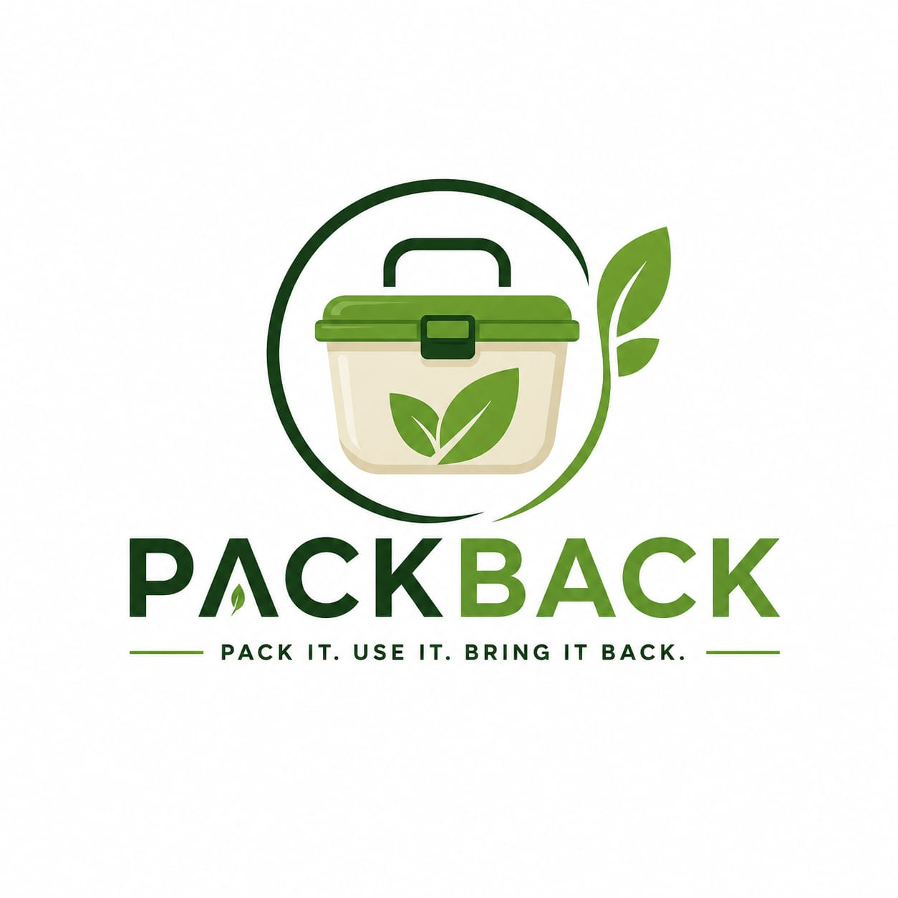
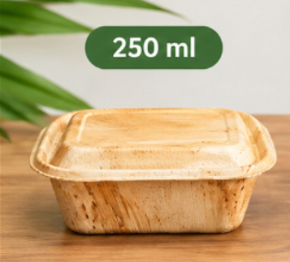
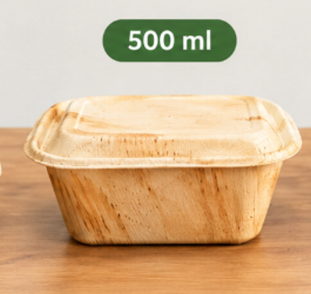
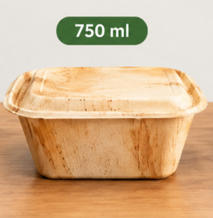
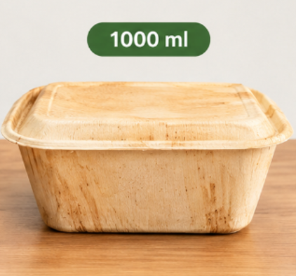

🍃
Natural Material
Our containers are made using naturally fallen areca palm leaves.

PackBack creates eco-friendly food containers made from naturally fallen areca palm leaves — a natural alternative to conventional packaging.
Single-use food packaging is used for a short time but can create waste long after the meal is over. PackBack provides a natural alternative using fallen areca palm leaves.
PackBack is a sustainable packaging idea that uses naturally fallen areca palm leaves to create useful food containers.
Our containers are made using naturally fallen areca palm leaves.
Areca leaf products provide a natural alternative to conventional plastic packaging.
PackBack containers can be made in different sizes for different types of meals.
Areca leaf products are made from natural plant material and can biodegrade under suitable conditions.
Choose a PackBack container for your food.
Enjoy your meal in a natural food container.
Dispose of the used container responsibly according to local composting or waste facilities.
Natural fibre products can break down under suitable composting conditions.
PackBack containers are made from naturally fallen areca palm leaves using a simple and natural process.
Areca leaf fibre is a natural, eco-friendly material made from naturally fallen areca palm leaves. These leaves can be cleaned, dried and shaped into useful food packaging products.
Naturally fallen areca palm leaves are collected from farms and plantations.
The leaves are cleaned properly to remove dust, dirt and other impurities.
The cleaned leaves are dried to remove excess moisture.
The dried leaves are placed into moulds and shaped using heat and pressure.
The finished products are trimmed, checked and prepared for food packaging.
Natural areca leaf containers available in different sizes for different food requirements.

Small snacks and sides
₹12 / unit
Regular meals
₹13 / unit
Large meals and combos
₹14 / unit
Full and family meals
₹15 / unitAreca leaf fibre gives us a way to create useful food containers from a naturally available plant material.
Made from naturally fallen areca palm leaves.
A natural alternative to conventional plastic food packaging.
Made from plant material that can break down under suitable conditions.
Can be shaped into containers, plates, bowls and trays.
Choose PackBack for a natural and eco-friendly packaging option for your restaurant or food business.
eco-friendly containers supplied
Our proposed PackBack containers are available in different sizes and prices.
Small snacks & sides
Regular meals
Large meals & combos
Full & family meals
By choosing natural areca leaf packaging, we can help reduce dependence on conventional plastic food packaging.
Become a PackBack partner, ask a question or tell us about your business.